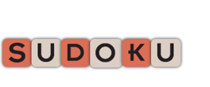

Your browser doesn't support the features required by impress.js, so you are presented with a simplified version of this presentation.
For the best experience please use the latest Chrome, Safari or Firefox browser.
Hi! Anna Mendoza here.
Front-end developer + designer, with strong skills in
responsive, UX and visual design. I code with HTML5 & Haml, CSS3 & Sass, JQuery & Javascript. I love Ruby & RoRails,
and am comfortable with all things Adobe.
And how long have I been designing
in the cloud?
I've been designing for 20+ years, working on a broad range of projects. From developing the business strategy, to designing the branding assets.
The last 7 yrs, my efforts have been focused on delivering code. A good breadth of my work can be seen here.
I like working withbig ideas
Then I break it down with a process: scope the work, ideate, iterate, respond to change. All blended with research and lots of
collaboration.
My Toolbelt: various UX frameworks,
git! & and Github.
I like to brainstorm and work best collaboratively. A big fan of behavior driven development and object oriented design.
let's look at some work,
shall we?
Vantage Partners
A 25 year old Silicon Valley executive management company needed a makeover.
Deliverable: Marketing Research / Branding / UX & UI / Art Direction / Website Development
Tools & Framework: Radiant CMS / RonR / HTML5 / Sass & Compass / Ajax and Javascript
Esmond Natural Vitamins
30 Year old Chinese vitamin company needed to re-introduce itself to the American market,
with a brand new look and feel in an e-commerce solution.
Deliverable: Marketing Research / Branding / Art Direction / Packaging Design
UX and UI / Website Development
Tools & Framework: Shopify / RonR / HTML5 / Sass & Compass / Ajax & Javascript
Capital Cooking Equipment
A grand-fathered company in the high-end retail space of luxury kitchens,
needed an update for both online and offline presentations.
Deliverable: Marketing Research / Brand Strategy / Business Development
In-Store POP / Art Direction / Website Development
Tools & Framework: Custom CMS / PhP CAKE / HTML5 / CSS3 / Ajax & Javascript

Sudoku Sensation
Senior Zynga game developer needed a redesign for his personal project, Suduku Sensation.
Deliverable: UX and UI / Story Development / Concept Redesign
Asset Development / Theme Development / Art Direction / Website Development
Tools & Framework: Serve / HTML5 / CSS3 / Cucumber / Photoshop / Illustrator / InDesign
Available on iTunes
Good Day CA
Illustrator and designer, Braden Wise needed a Portfolio site with a CMS.
His project won the 2011 Communication Arts Most Interesting Personal Projects Award.
Deliverable: UX / Design / Art Direction / Website Development
Tools & Framework: Serve / HTML5 / Cucumber / Adobe Creative Suite / WordPress
Good-Good
New York based merchandiser, specializing in lifestyle products for the hip male athlete,
needed an online e-commerce site with a CMS.
Deliverable: UX / Wireframes / Design / Art Direction / Website Development
Tools & Framework: Shopify / RonR / Liquid / HTML5 / Sass & Compass / Javascript
mla gallery
LA based Latin-American Gallery specializing in Cuban art, needed online e-commerce site.
Deliverable: Brand Identity / UX / Design / Art Direction / Website Development
Tools & Framework: Shopify / RonR / Liquid / HTML5 / Sass & Compass / Javascript
Kathryn Villeneuve
LA based fine artist needed online gallery site with a CMS.
Deliverable: UX and UI / Design / Art Direction / Website Development
Tools & Framework: Squarespace / HTML5 and CSS3 / Javascript
lootsie.com
Startup based in Santa Monica focused on creating a gamification platform for iPhone, Android and Web.
Fast prototype was created with initial market research.
Deliverable: Market Research / Concept Development / UX / Prototype of site using Bootstrap
Tools & Framework: Serve / HTML5 / Sass & Compass / Javascript / Bootstrap
UX and Wireframe Samples
Samples can be furnished upon request.
Tools & Frameworks: Bubbl.us / Unify Eight Shapes / Omni-graffle / Bootstrap / Notabl